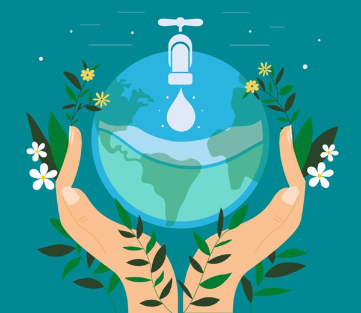

No Brasil, 16% das pessoas não têm água tratada e 47% não têm acesso à rede de esgoto, segundo dados do Sistema Nacional de Informações sobre Saneamento (SNIS).O problema da água também afeta o combate a Covid-19. Isso porque, sem poder lavar as mãos ou realizar uma higiene adequada, muitos brasileiros estão sendo contaminados. Segundo a especialista, garantir acesso a água para a população também pode diminuir o número de infecções e outras doenças.
OBJETIVOS DA ODS 06

6.1 até 2030, alcançar o acesso universal e equitativo à água potável, segura e acessível para todos.
6.2 até 2030, alcançar o acesso a saneamento e higiene adequados e equitativos para todos, e acabar com a defecação a céu aberto, com especial atenção para as necessidades das mulheres e meninas e daqueles em situação de vulnerabilidade
6.3 até 2030, melhorar a qualidade da água, reduzindo a poluição, eliminando despejo e minimizando a liberação de produtos químicos e materiais perigosos, reduzindo à metade a proporção de águas residuais não tratadas, e aumentando substancialmente a reciclagem e reutilização segura globalmente.
6.4 até 2030, aumentar substancialmente a eficiência do uso da água em todos os setores e assegurar retiradas sustentáveis e o abastecimento de água doce para enfrentar a escassez de água, e reduzir substancialmente o número de pessoas que sofrem com a escassez de água.
6.5 até 2030, implementar a gestão integrada dos recursos hídricos em todos os níveis, inclusive via cooperação transfronteiriça, conforme apropriado.
6.6 até 2020, proteger e restaurar ecossistemas relacionados com a água, incluindo montanhas, florestas, zonas úmidas, rios, aquíferos e lagos.
6.a até 2030, ampliar a cooperação internacional e o apoio à capacitação para os países em desenvolvimento em atividades e programas relacionados a água e saneamento, incluindo a coleta de água, a dessalinização, a eficiência no uso da água, o tratamento de efluentes, a reciclagem e as tecnologias de reuso.
6.b apoiar e fortalecer a participação das comunidades locais, para melhorar a gestão da água e do saneamento.